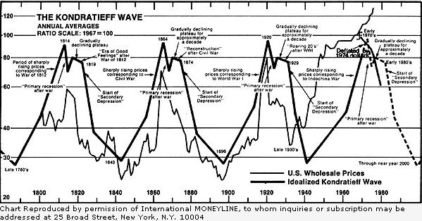

As many of you will remember, this column first discussed Nikolai Kondratieff's "wave theory" back in 1977 (see MOTHER NO. 44 ... Information on ordering back issues can be found on page 148). Those who weren't with us then, however, may not be aware that Kondratieff was a Russian economist - portrayed as the character named "Kondratyev" in Alexander Solzhenitsyn's Gulag Archipelago - who speculated that major world economic events tend to move in cycles, or waves, of about 54 years in length.
And, as you can see from the accompanying chart, which compares actual U.S. wholesale prices with the "idealized" Kondratleff Wave, the American economy certainly seems to be approximating the pattern that the forward-looking Soviet thinker proposed.
Now we all know that a series of lines on a graph can only imply - but not guarantee - the direction in which the same lines will travel once future events have marked their own points in the scale . . . but if Kondratleff's theory is correct (and it sure fits the last two centuries like a glove), it's a pretty safe bet that our economy is before?, to get a whole lot more rocky before it gets better. (And, when one considers that the past three recoveries have each accompanied a major war and a period of increased industrialization and environmental carnage, "better" is a very questionable term.)
Kondratieff's predictions would be bad enough if they stood alone against some rosier future predicted by today's economists . . . but - as the following excerpts, taken from both the "establishment" economic journals, news publications, and thinkers and a wide range of "alternative" investment newsletters show - hardly any source is willing to make other than gloomy predictions nowadays!
JULIAN M. SNYDER, International Moneyline, Dept. TMEN, 25 Broad Street, New York, New York 10004, 12 issues a year, $139: "The latest 'credit crunch' engineered by the Federal Reserve will break the economic recovery and send the U.S. economy back into deep recession in 1981."
BUSINESS WEEK, December 29, 1980 - January 5, 1981 (double issue), "Washington Forecast": "There are ample grounds for skepticism about Reagan's ability to do all he wants to do. The federal deficit is swelling by the hour, and since the President-elect will have control of the budget for barely half of fiscal 1981, his ability to reduce it is limited. And with the near-certainty of a recession in early 1981, the deficit could approach $100 million."
THE WALL STREET JOURNAL, January 6, 1981 (headline): "Gasoline Prices Are Expected to Increase by 16 cents to 40 cents a Gallon by July."
C.V. MYERS, Myers' Finance and Energy, Dept. TMEN, Suite 418 Peyton Building, Spokane, Washington 99201,14 issues for $200: "There will be an increasing shortage of gasoline for transportation and oil for power in this country. An enforced sharing program will have to be put into place."
R.E. McMASTER, JR., The Reaper, Dept. TMEN, P.O. Box 39026, Phoenix, Arizona 85069, 47 issues a year, $225: "Over 81 million people are dependent upon government for their income. We are progressively becoming economic slaves."
FRIEDRICH von HAYEK (Nobel prize-winning economist) in reply to a question - posed in a Business Week Interview December 15, 1980 - concerning the possibilities of curing inflation without putting the economy through a steep recession: "No, I would be very surprised if any country could avoid that painful process."
JOHN CARNESS CROSBIE (as he was sworn into office in June of 1979): "My grandfather was minister of finance in Newfoundland with a deficit of $2 million. I was provincial minister of finance with a deficit of $200 million. Now I'm Canada's Minister of Finance with a deficit of $12 billion. It makes a man proud."
NEXT magazine, February 1981: "By 1979 Western financiers had extended Poland $20 billion in credit - up from $760 million in 1971. One of the ... scenarios being bruited about is that the Soviet Union would provoke a Polish default as a way of collapsing the banks and economics of the West. "
NEXT magazine, February 1981: "Brazil with $50 billion in foreign dept is high on every banker's nightmare list. Half of Brazil's export earnings now go to the banks."
JAMES E. BLANCHARD, Gold Newsletter, Dept. TMEN, National Committee for Monetary Reform, 8422 Oak Street, New Or. leans, Louisiana 70118, 12 issues per year, $39: "Today, the scariest thing of all is that, for the first time in history, we have the potential for worldwide hyperinflation . . . I believe that we'll have one more inflationary cycle that goes up almost to 30% and comes back to a new low of 20%. From there, it'll climb to the area of 40% to 50% inflation. At that point, I think it'll just keep on going into triple digit inflation. Maybe in three years . . . 1986 or 1987 at the outside."
|
 |
|
|